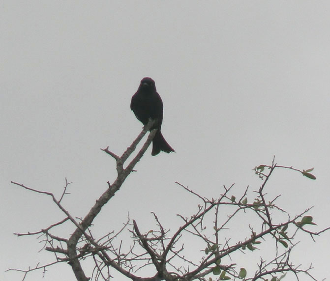

ABC0007

Taxonomy
Common name: Fork-tailed Drongo
Scientific name: Dicrurus adsimilis
Family: Dicruridae
Order: Passeriformes
Class: Aves
Recording details
Secondary species: Grey Go-away-bird
Tertiary species: Ring-necked Dove
Soundscape: -
Equipment: XA40
Recorder: NSerpa, GFrainer
Annotation: NSerpa
Weather
Wind speed: -
Cloud cover: -
Temperature: -
Location
Locality: Kruger National Park
Date:02/10/2023
Time: 09:10:33